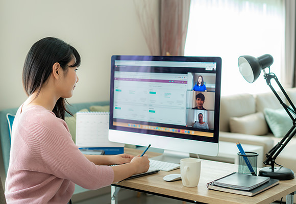

Withコロナ時代の
新しい映像ソリューションを。
最新テクノロジーと独自ノウハウにより、映像制作における感染リスクの問題を解決。
スターコミュニケーションズが、Withコロナ時代に最適な映像制作・配信をサポートします。
Situation
映像業界を取り巻く
状況について
-
3蜜回避
コロナ禍において、多くのスタッフが関わる映像制作の現場では、3密（密閉、密集、密接）回避は避けられない問題です。業界のガイドラインでは、身体的距離を2m以上離すことが推奨されています。3密をつくらないようソーシャルディスタンスに配慮し、出演者やスタッフのみならず、一般の方々の安全を確保しての制作進行が求められます。
-
フルリモート
ガイドラインでは、外出を伴うロケ、中継、収録は必要性を慎重に検討しながら、可能な限り見合わせることが推奨されています。そのため映像制作の現場では、従来の形式にこだわらない制作手法が求められています。昨今、遠隔操作によるフルリモート制作への移行が進んでいますが、回線の問題、制作環境の問題など、多くの問題を抱えています。
-
移動の制限
コロナ禍においては、移動を伴う制作は必要性と安全性を慎重に検討して実施する必要があります。業界のガイドラインでは、番組出演者のスタジオ参加による収録は見合わせ、リモート出演を活用することが推奨されています。政府による移動制限は緩和されましたが、予断を許さない状況は続いており、非常時を見据えた持続可能な対策が求められています。
新型コロナウイルス
感染拡大ガイドライン
スターコミュニケーションズは、これらのガイドラインに沿った形での業務進行が可能となる
ソリューションの確立が急務であると考えます。
最新テクノロジーと独自のノウハウを駆使した、
これからの生活スタイルに沿った新しい映像制作ソリューションをご提供し、
Withコロナ時代に最適な映像制作・配信を
サポート
します。
Withコロナ時代の
新しい映像ソリューション
3
つのポイント
新しい映像ソリューション
-
POINT 1
現場スタッフ数・コストを抑えられる、 リモートプロダクション
リモートプロダクションとは中継現場とスタジオをネットワークで接続し、番組制作を行う手法です。全てのリソースを中継現場に持ち込む必要がないため、機材の運搬、スタッフや設営にかかる費用、時間的コストを最小限に抑えることが可能です。
またWithコロナ時代においては3密回避にもつながるソリューションとして、今さらに注目を集めているソリューションです。
- 実現できる製品
- TVU RPS
- TVU TIMELOCK

-
POINT 2
ブラウザだけで配信が可能な、 クラウドプロダクション
クラウドプロダクションとはクラウド上のリソースを活用し、主にネット配信の分野で注目される新しいソリューションです。従来では、高度なネット配信を行うには専用の業務用機材を準備し、専門の配信業者に委託するしかありませんでしたが、クラウドプロダクションなら専門の機材やスタッフを手配することなく、PCのブラウザを立ち上げるだけで全ての配信業務が可能です。
Withコロナ時代においてはリモートワーク中の従業員に自宅から配信管理を任せることができるなど、今後の活用が大きく期待されているソリューションです。
- 実現できる製品
- TVU Producer
- TVU Partyline

人手不足を補い、ハイレベルな撮影が可能な 高性能AIカメラ
映像技術の発展により、AIカメラが注目を集めています。従来より映像業界は多大な人的リソースを必要としますが、AIカメラの普及によりアマチュアスポーツやローカルイベントなど、リソースや予算面での課題があった多くイベントが撮影可能となり、潜在的なコンテンツの掘り起こしが期待されています。
Withコロナ時代においてはスタッフをAIに置き換えることで現場で対応するスタッフの数を抑えることが可能で、3密回避、ソーシャルディスタンスの確保といった、業界全体の安全対策に貢献することが期待されています。
- 実現できる製品
- Pixellot
- Seervision

Scene
こんな撮影・配信に
おすすめです
-

スポーツ中継
-

音楽ライブ
-

セミナー中継
-

スタジオ撮影
-

オンライン授業
-
株主総会
その他様々な無観客イベント、
リモートマッチ
などにもご活用いただけます。
通常多くのスタッフ・機材を要し、
密をつくりやすいシーンでも、
本ソリューションであれば
安全に配慮しながら実施が可能
です。
Step
ご利用までの
4ステップ
-
お問い合わせ
まずは お問い合わせフォーム からお問い合わせください。内容を確認し、担当者からご連絡させていただきます。ご予算、ご利用シチュエーション、実施時期をお伝えいただくと、スムーズにご案内が可能です。
-
デモ
ヒアリングさせていただいた内容に合わせてソリューションをご案内し、オンラインにて機材をお見せしてデモを実施させていただきます。機材やGUI画面の操作方法、撮影時のご注意点などをお伝えさせていただきます。オンラインデモでご案内できない部分については実機を用いてご来社もしくは訪問デモを実施させていただきます。（有償対応となる場合があります）
-
お見積り／発注
ご提案のシステム構成がまとまりましたら見積書をご案内させていただきます。ご発注いただいたタイミングで機材と技術スタッフを確保いたします。
-
本番
ご発注いただいた構成、スケジュールに沿って機材とスタッフを手配させていただきます。案件成功まで専任のスタッフがしっかりサポートいたします。
Withコロナ時代でも、
ハイエンドな映像制作を。
コロナ禍での映像制作に課題を感じている方は、ぜひ私たちにご相談ください。
お問い合わせはこちら